Neper looks progress
One widget set, several platform looks (docs/ui/looks-plan.md). Generated from docs/ui/looks/status.json by scripts/render_looks.py; updated 2026-10-15. 30 controls.
Neper
profile Neper
planned 0started 0review 0matched 0ready 30
Windows
profile Windows
planned 0started 4review 22matched 4ready 0
Windows dark
profile Windows
planned 29started 1review 0matched 0ready 0
macOS / iOS
profile CupertinoLike
planned 30started 0review 0matched 0ready 0
Android
profile MaterialLike
planned 30started 0review 0matched 0ready 0
| Control | Neper | Windows | Windows dark | macOS / iOS | Android |
|---|---|---|---|---|---|
| LabelTcxLabel → control.text | ready The baseline: control.text in the Neper type scale, same strings as the Windows sheet (the sheet's cells changed to the real v3 labels; the Neper pixels of the old sheet are unchanged). | review Audit 2 (round 9). label.png: structural 3,135 px outside text zones, 519 off by >2 (max 198: the link underline rows and the bold title rows; 1,289 incl. text zones). Ink boxes within 1 px on 6 of 10 real labels (widest miss the bold 13 px title, 4 px). The pressed link grab is identical to its rest grab, so no pressed look exists. Not matched: ink boxes beyond 1 px, underline row mismatches. 6 known gaps
| planned | planned | planned |
| ButtonTcxButton → control.button | ready The baseline: the existing v2 pill button. The sheet now has ten cells (the Windows evidence sizes); the Neper pixels of the earlier sheets (button.png, button_kinds.png) render identically to master. | review Audit 2 (round 9). Crisp-ring dialogs: button.png and button_shift.png 0 of 15,536 and 0 of 5,618 structural px off (max 0; rest, default, mnemonic, disabled, pressed, focus, default+focus, shift cells); button_kinds 78 px off, all in the picture boxes (artwork). HELD-OUT: the ring tiles are baked from Search and Filter (rest, default, disabled) and the pressed ring from Sort OK; the other pressed grabs were compared with the pressed cell (ring and dots, caption excluded): Search OK, Filter OK, Missing Set Cards OK, Conditional Formatting OK 0 px off; Search Cancel, Filter Clear and All, Sort Clear, Statistics Close 3 px each (caption edge, max 118); Advanced Filter OK and Open 371 and 381 px off (max 186: the ring phase differs, not reproduced). NOT matched: the resampled dialogs. The Options buttons in dialog_wide.png differ on all three rings by about 130 px per edge row (max 83), Deck Properties, Deck Legality and About likewise. A captured state in 5 of 11 dialogs is therefore off beyond tolerance. 8 known gaps
| started Windows 11 dark palette (face #2B2B2B, border #5A5A5A, accent #4CC2FF, white text) rendered for the button only; every colour is unmeasured (no v3 capture in dark). 2 known gaps
| planned | planned |
| Check boxTcxCheckBox → control.checkbox | ready The baseline: the v2 18 px box in its 40 px state circle, all states. | review 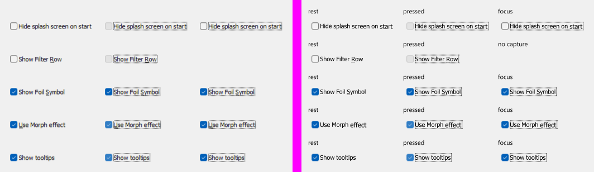 Audit 2 (round 9). checkbox_states: 5,659 structural px outside text zones, 128 off (max 137); checkbox_dialog 2,601 / 115 (max 137). HELD-OUT check on the 14 x 14 box windows (tiles baked from Options Interface hide-splash rest and pressed, Grids show-foil rest, Morph use pressed): baked instances 0 to 2 per channel (0 px off); held-out instances do NOT reproduce: Show Filter Row rest 7 (46 px of 196), Use Morph rest and focus 6 (31 px), Show tooltips rest, pressed and focus 10 to 12 (47 px each): the whole 1 px box border is 6 to 12 levels off. Of the 13 cells, 7 are within 2 (the baked sources and focus cells reusing the baked rest tile) and 6 held-out cells are not. 7 known gaps
| planned | planned | planned |
| Radio buttonTcxRadioButton → control.radio | ready The baseline: the v2 20 px ring in its 40 px state circle, all states. | review 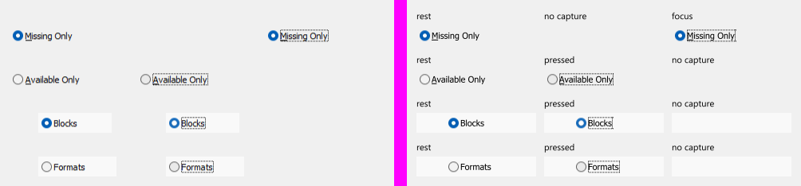 Audit 2 (round 9). radio_states: 11,084 structural, 630 off (max 156); radio_dialog 39,072 / 13 (max 109). HELD-OUT on the 13 x 14 disc windows (tiles baked from Missing Set Cards Available and Missing rest and pressed): baked cells 0 px off; the Filter dialog's Blocks and Formats discs (page #F9F9F9) 13 levels over 28 px; the focused Missing Only and Search discs 9 levels over 45 to 49 px. 2 of 8 disc cells baked, 6 held-out, none within 2. 6 known gaps
| planned | planned | planned |
| Radio groupTcxRadioGroup → control.radio_group | ready The baseline: v2 radios stacked with no frame. | review 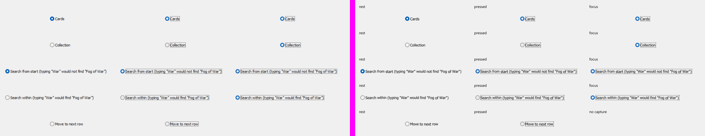 Audit 2 (round 9). radio_group_states: 13,881 structural, 2,232 off (max 227; about 1,350 px are 11 levels of the neighbouring frame crop); radio_group_dialog 24,860 / 26 (max 227). Discs: baked Search group 0 px, Options group discs 24 to 28 px off (13 levels), the pressed Options discs up to 41 levels over 29 to 33 px (held-out instances). 8 known gaps
| planned | planned | planned |
| Text editTcxTextEdit → control.text_field | ready The baseline: the existing v2 outlined field, unchanged. | review Audit 2 (round 9). Unchanged status. No TcxTextEdit is captured on an Options page, but the Filter dialog's Cards tab (states/tab-selected-filter-cards) shows the NOT single-line box (313 x 25) and the AND and OR boxes at 100 %; ours was not compared against them. The shared frame is matched through the mask, spin and button edits (edits_dialog 1 of 39,855 structural px off). 10 known gaps
| planned | planned | planned |
| Spin editTcxSpinEdit → control.spin_box | ready The baseline: the existing v2 outlined field, unchanged. | matched Audit 2 (round 9). MATCHED. edits_dialog.png 1 of 39,855 structural px off (max 18); edits_states.png: fast-button spin focused 0 off (max 1), stacked spin focused 4 off (max 3); digit ink boxes within 0 px on all 3 spins. The four arrow-pressed grabs (up, down, left, right) equal the focused grab except for the digits, so a pressed arrow IS the focused look, as drawn. HELD-OUT: tiles are baked from Decks (kind 1) and Morph speed (kind 2) and the y-drift model is fitted over 8 rest and 5 focus instances; leave-one-out on the 5 drift rows: max 1 level, 0 of 195 predictions beyond 2; the second Morph spin (y 169, not the tile source) is 0 px off in edits_dialog. Unverified (uncaptured): hover of the arrows, disabled, read-only, limit-greyed arrows. 12 known gaps
| planned | planned | planned |
| Combo boxTcxComboBox → control.combo_box | ready The baseline: the v2 outlined combo box in the same cells. Open lists are on neper/combo_box_lists.png (run the app with an argument, `combo_box.exe lists`); the list opens fading, so one frame shows it part way. | review 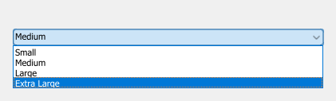 Audit 2 (round 9). Rest, focus, flat and pick: combo_box_dialog 20,272 structural, 26 off (text), combo_box_focus 26 off (max 70), combo_box_pick 10, combo_box_search_held 0, combo_box_edit 14 (max 255: caret only in ours). NOT within tolerance: open heads: combo_box_open_color 7,696 and open_size 7,794 px off (7,687 and 7,742 of them the head face, #CCE4F7 against the first-grab #D0E6F7, 4 levels, over 396 x 22 to 38), the second-grab sheets combo_box_open_color2 1,583 and open_size2 473, combo_box_open_show 479 (list scroll column 293 px, max 255), combo_box_held 1,571 (held ring, max 69), combo_box_flat 632 (max 51; the ref is only found at offset 153,37). 11 known gaps
| planned | planned | planned |
| Image combo boxTcxImageComboBox → control.image_select | ready The baseline: control.select (no pictures: control.image_select falls back to it under the other looks). | review 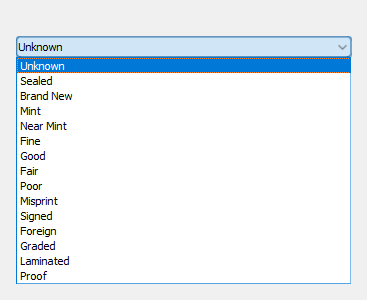 Audit 2 (round 9). Closed heads: image_combo_box_dialog 16,928 structural, 41 off (max 68). Open lists: image_combo_box_open_art 2,784 off (2,744 the head face), open_auth 622 (max 116), open_auth2 86 (max 219), open_condition 6,640 (6,596 the open head face, 4 levels), open_condition2 6,076 (6,047 at the head ring, max 240). 7 known gaps
| planned | planned | planned |
| Date editTcxDateEdit → control.picker | ready The baseline: overlay.date_picker_with with a typed field (stray carets are the harness's focus slot, as in the other sheets). | started Audit 2 (round 9). Unchanged: no date edit exists in any v3 capture (states README: not present). 2 known gaps
| planned | planned | planned |
| Mask editTcxMaskEdit → control.formatted_field | ready The baseline: the existing v2 outlined field, unchanged. | matched Audit 2 (round 9). MATCHED. Rest: edits_dialog.png mask cell 0 of 14,000 structural px off (max 1); focused: edits_states.png 24 px off, all the caret column (ref #282828 fading, ours #000000, 6 x 16 px, blink phase). HELD-OUT: the y-drift model (rest and focus, rows 0, 1, 19, 20, 21) leave-one-out over 8 rest and 5 focus captures: max error 1, 0 of 195 beyond 2; the rim tiles baked from Passwords y 144 compared with the y 89 and y 198 mask instances: 3 px beyond 2 per instance (max 6, the drifting row 20 corner, covered by the shipped per-cell slope table); the three mask edits are the only mask instances captured, so no instance exists that was neither baked nor fitted. Unverified (uncaptured): typed text and bullets, hover, invalid, read-only, disabled. 10 known gaps
| planned | planned | planned |
| MemoTcxMemo → control.text_area | ready The baseline: the existing v2 outlined field, unchanged. | review Audit 2 (round 9). Raised from started: the round 4 claim 'no memo capture at 100 %' is wrong. states/tab-selected-filter-cards shows the Search for Text AND and OR boxes (313 x 45) and the NOT box (313 x 25), empty, at rest, 100 %, on the #F9F9F9 page. Our rest memo is not within tolerance of them: foot rows 172 and 210 in the capture against 179 and 197 in ours, left rim 236 and 254 against 244, 249, 253 (up to 13 levels). Not compared further (our sheet draws other sizes and text). 7 known gaps
| planned | planned | planned |
| Button editTcxButtonEdit → control.button_edit | ready The baseline: the existing v2 outlined field, unchanged. | review Audit 2 (round 9). Demoted from matched. edits_dialog.png: the My Decks cell 0 of 10,332 structural px off, Card Art 1 off (max 18) but the Card Art path ink box ends 2 px short (x 288 against 286, bottom 1 px): beyond the 1 px rule. edits_states.png: focused 1 off (max 84), disabled 12 (max 73, text), text selected 485 px (glyph pixels in the highlight; the selection starts 1 px left of the capture's), ellipsis pressed 1,244 px off (the capture has the text selected, ours does not: the Press drive does not select it). Remaining: path ink -2 px, selection start 1 px, selected text missing in the pressed cell. 11 known gaps
| planned | planned | planned |
| Token editTdxTokenEdit → control.token_field | ready The baseline: the existing v2 outlined field, unchanged. | started Audit 2 (round 9). Unchanged: no token edit exists in any capture (the Filter Cards tab shows none). 2 known gaps
| planned | planned | planned |
| Check list boxTcxCheckListBox → control.multi_select_list | ready The baseline: the v2 multi-select list (selection fill, 40 px rows, state circles). | review 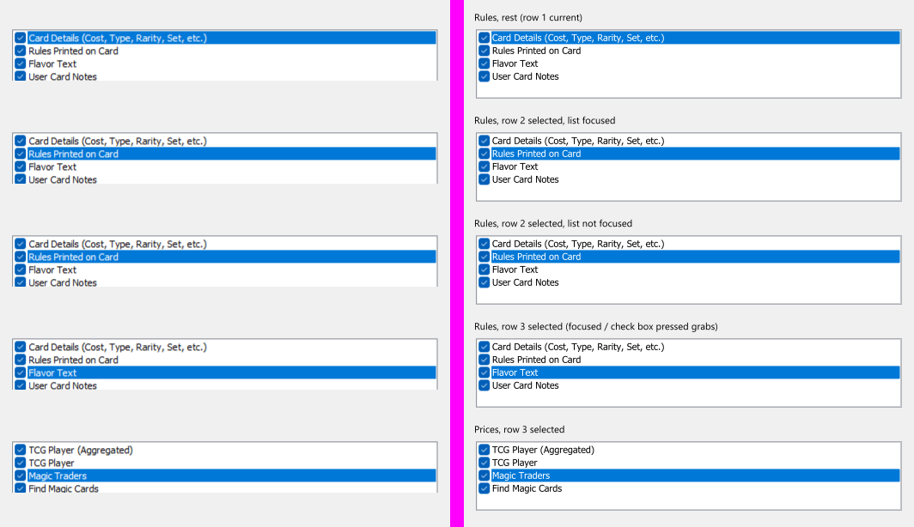 Audit 2 (round 9). check_list_box_dialog 47,808 structural, 1,684 off (max 251; a 193 x 18 band of 902 px at y 12, a 477 x 20 band of 610 px); check_list_box_states 135,460 / 8,202 off (max 249; two 501 x 9 row strips of 1,292 and 1,260 px at y 451 and 571, 240 levels). The check marks use the baked check box tiles. 7 known gaps
| planned | planned | planned |
| Progress barTcxProgressBar → control.progress_bar | ready The baseline: v2 progress bar. | started Audit 2 (round 9). Unchanged: no progress bar is visible in any capture (the three report preview frames show none). 3 known gaps
| planned | planned | planned |
| Group boxTcxGroupBox → control.group_box | ready The baseline: the v2 outlined group (rows with dividers); the section header cell shows a plain title. | matched Audit 2 (round 9). MATCHED. group_box_dialog.png: 49,589 structural px, 26 off (max 83, text stems); per cell: header 11, the three TcxGroupBox frames 5 each (glyph pixels); frame lines 0 off. Caption ink boxes 0 to 1 px on all 4 (Select Format, Show Cards, Search in, Incremental Search) and the header. The painter is analytic (fractional extents fitted to the captures: Select Format needs a measured 0.4 px), not baked tiles; 3 of the 7 TcxGroupBox instances (Statistics, the other Filter groups) are not in the sheet and so unverified. Unverified (uncaptured): disabled caption, focus, collapsible variants. 7 known gaps
| planned | planned | planned |
| Page control (tabs)TcxPageControl → control.tabs | ready The baseline: v2 tabs (primary indicator) and the tab view. | review 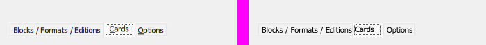 Audit 2 (round 9). Strips: about 139 off (max 69), cards 257 (max 65), custom 81 (max 10), filter 165 (max 242), options 198 (max 228), held 188 (max 65), stats 89 (max 155); the 11 Statistics tab states 507 to 563 off each (max 255; the substitute pictures meet the tabs); page_control_bottom 2,377 off of 3,692 (the live bottom strip is not reproduced, max 255). 7 known gaps
| planned | planned | planned |
| SplitterTcxSplitter → control.split_view | ready The baseline: the v2 sash (1 px line, grip on hover, primary line while dragged). | review Audit 2 (round 9). splitter_dialog: the 8 x 387 strip is exact (columns 18 to 25: 0 off; the 972 px reported at columns 12 to 17 are the sheet's #F9F9F9 backdrop against the ref's #F0F0F0 neighbour crop, max 9); the held (pressed) grabs equal rest. splitter_live: 640 structural, 163 off (max 74): zone frame and top edge differ (#ADADAD against ours #A0A0A0). 4 known gaps
| planned | planned | planned |
| Status barTdxStatusBar → navigation.status_bar | ready The baseline: v2 status bar. | review Audit 2 (round 9). Demoted from matched. Chrome: status_bar 5,236 structural px, 2 off (max 3); status_bar_report 7,718 / 3 off (max 81, one separator end pixel). Text ink boxes (threshold 140): the main bar's counts string x 10..269 against 10..270, top 1 px low, Idle 1 px right; the report bar's 'Page 1 of 1' x 2..54 against 3..57 (right end 3 px short, left 1 px): beyond the 1 px rule. Unverified: hover, hint windows, the progress panel. 5 known gaps
| planned | planned | planned |
| Toolbar buttonTdxBarButton → control.glyph_button | ready The baseline: round glyph buttons (control.glyph_toggle); the sheet's first cell is one row of them. | review Audit 2 (round 9). toolbar_button: 6,369 structural px, 233 off (max 45): the first rows of separators and grips, the second bar's left edge and right edge column, plus 57 px in one 21 x 19 picture box (pictures are artwork). No hot, pressed or checked capture exists. 7 known gaps
| planned | planned | planned |
| Menu barTdxBarManager (main menu) → navigation.menu_bar | ready The baseline: v2 menu bar (the open-menu sheet shows no menu because the menu fades in). | matched Audit 2 (round 9). MATCHED (upgraded from review). All 11 captures (rest, 9 open titles, hot View): structural off 30 px of about 7,100 per sheet (max 105, glyph pixels; 27 to 49 per sheet); all non-text pixels 5 to 32 beyond 2 of 16,260 per sheet, max 3 (rest), 16 (open Help), 8 (hot View): the 1 px drifting sliver right of an open or hot box and the grey drift of later titles' top rows. Title ink boxes: 10 of 10 titles within 1 px (left 0, right 0 or 1) on rest, open View and open Help, 7 of 7 on hot View. The box greys are drawn from rules, not baked tiles. Unverified (uncaptured): hover (the hot grab is a resting pointer, not a controlled hover), disabled title, Alt focus, Admin open state. 6 known gaps
| planned | planned | planned |
| Popup menuTdxBarPopupMenu → overlay.menu | ready The baseline: v2 menu (navigation.bar_menu); the menu fades in so the static sheet shows little. | review Audit 2 (round 9). Demoted from matched on the text rule only. Chrome over the 36 single-menu refs (picture slot x<26 excluded as artwork): 418,502 structural px; the 11 rest menus 27 off of 98,037 (max 102), the 25 selected-row and sub-menu refs 1,400 off (max 253), glyph pixels of the rows; 2 refs with 0 off; frames, fills, separators, highlight bars and header rules flat-exact. Text ink x extents (my band test): thr 100 (dark rows) 405 of 429 row bands within 1 px at both ends (94 %), thr 40 (incl. disabled rows) 528 of 571 (92 %); the other 6 to 8 % have a label or shortcut end 2 to 3 px off. popup_menu_dialog (composite) 44,262 / 748 off (max 255, the cells' pictures). The width rule and the dither flags come from the same 10 captures: no held-out menu exists. Unverified: hover, scrolling, disabled checked marks, submenu placement. 9 known gaps
| planned | planned | planned |
| Hint (tooltip)TcxHintStyleController → overlay.tooltip | ready The baseline: the dark plain tooltip and the raised rich tooltip. | started Audit 2 (round 9). Unchanged: no tooltip can be captured. 3 known gaps
| planned | planned | planned |
| Scroll barTcxScrollBar → widget.scrollbar | ready The baseline: the theme's overlay thumb, unchanged by round 4. | review 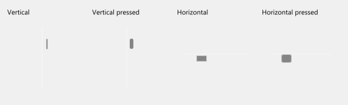 Audit 2 (round 9). scroll_bar_live: 2,326 structural, 574 off (max 240; 478 px of a 24 x 118 block, the live bar's track and arrows against our sheet's: the ref is only found at offset 111,44). The thumb blocks of scroll_bar_states (workers: body 0 off, caps up to 77) were not re-extracted; the arrows and track of the live bar remain off. 4 known gaps
| planned | planned | planned |
| List boxTcxListBox → control.list_box | ready The baseline: the v2 list box (rounded frame, check on the chosen row). | review 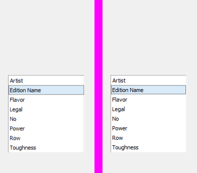 Audit 2 (round 9). list_box_dialog 20,682 structural, 57 off (max 164); list_box_blur 21,506 / 157 (max 69; a 155 x 7 line strip, 149 px, 35 levels); list_box_focus 20,739 / 223 (max 228; the focus rectangle dots). 5 known gaps
| planned | planned | planned |
| Tree listTcxTreeList → tree_adapter | ready The baseline: v2 tree table, unchanged by round 4. | review Audit 2 (round 9). tree_list 56,784 structural, 6,397 off (max 231; the 302 x 319 area is about 1 px out of phase at the best offset: row pitch), tree_list_check 15,666 / 1,528, tree_list_focus 15,761 / 1,560 (max 251), tree_list_rules 4,987 / 628 (max 226). By the flat-pixel measure the workers use: 789 of 63,382, 238 of 16,585, 228 of 16,596, 40 of 162,503. HELD-OUT: the marks are cut from the Filter dialog captures; the Rules Manager list (not a source) has 40 flat px off, passes. 5 known gaps
| planned | planned | planned |
| Vertical grid (property grid)TcxVerticalGrid → collection.property_grid | ready The baseline: collection.property_grid_of, the existing v2 property grid with group headings, same two sheets. | review 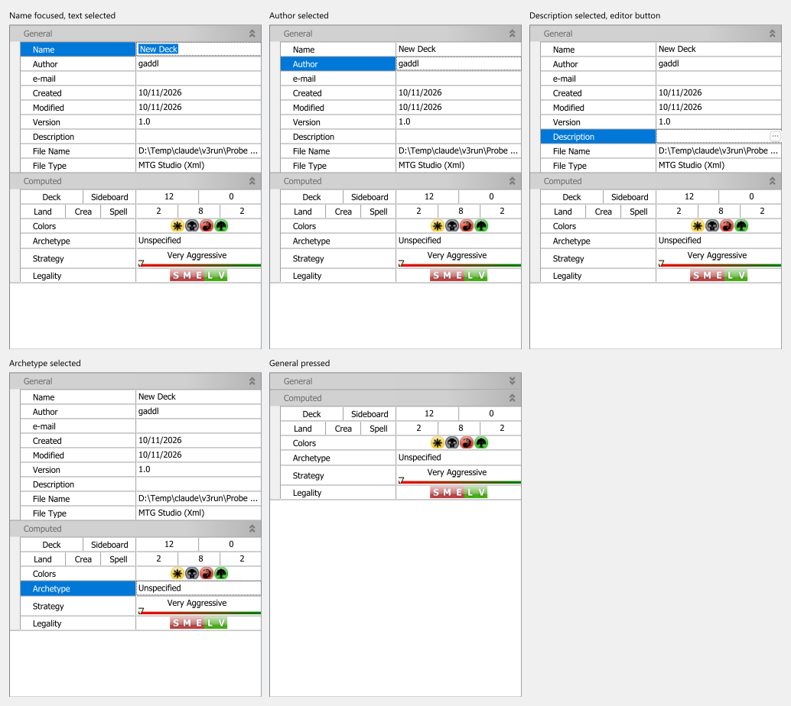 Audit 2 (round 9). vertical_grid 53,085 structural, 4,546 off (max 255; 3,759 px the lower half, pictures and bars); vertical_grid_states 481,550 / 29,310 off (max 255; two 328 x 130 blocks of 6,691 and 3,759 px: the Computed rows and the pressed General category). 5 known gaps
| planned | planned | planned |
| Data gridTcxGrid → datagrid (own Look: gridlook.v3()) | ready The baseline: the theme's own data grid. The sheets build their grids afresh per look, so the Windows look no longer leaks into the Neper passes (the earlier 1.5x Neper render showed the Windows grid). | review 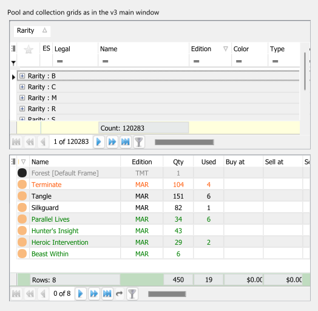 Audit 2 (round 9). data_grid_main 141,232 structural, 16,026 off (max 250; 10,677 px in the upper 497 x 421 block, 3,965 in the lower grid), data_grid_states 61,469 / 12,470 (max 224), data_grid_states_pressed 7,217 / 1,050 (max 240), data_grid_dialogs_sort 52,782 / 8,925 (max 240). By the flat-pixel measure the workers use: 3,590 of 135,231, 881 of 57,344, 1,432 of 56,765. The pixel glyphs (sort marks, funnel, arrows, navigator) are cut from data_grid_main itself; the held-out Sort dialog grid shows the same glyph kinds with 1,432 flat px off. 10 known gaps
| planned | planned | planned |
| Dialog (form chrome)TForm / TcxButton row → overlay.dialog | ready The baseline: the v2 card over a scrim (dialog.png, dialog_wide.png), the alert with icon (dialog_message.png) and the frameless title bar (title_bar.png). The Neper pixels of the earlier sheets are unchanged. | review Audit 2 (round 9). title_bar.png 126,036 structural px, 1,293 off (max 222; 498 px the long main-window caption text, 379 the second caption); the dialog bodies of dialog.png and dialog_wide.png are not composed (blank), so only chrome is judged. The Options, About and Deck Properties buttons are the resampled ring (see button). 7 known gaps
| planned | planned | planned |


Gaps: no Neper equivalent yet
- Embedded browser (TWebBrowser / TEdgeBrowser): No Neper control; listed, not built.
- Chart (TcxChart / TChart): e.gfx.chart draws charts but there is no chart control with a Windows look.
- Tray icon (TTrayIcon): No Neper equivalent.
- Native file dialogs (TOpenDialog / TSaveDialog): No Neper equivalent; the OS dialog is used.
- Image combo box (TcxImageComboBox): No per-item image in Neper's combo box rows; control.image_select adds it for the Windows look and is the plain select under the others